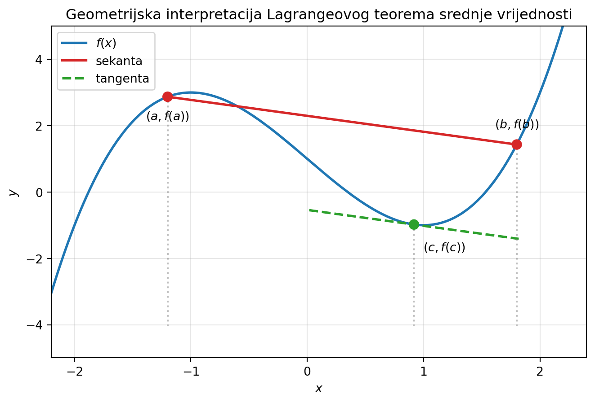

U ovom poglavlju prikazat ćemo nekoliko temeljnih rezultata iz diferencijalnog računa. Ovi su rezultati vrlo važni za analizu funkcija. Obradit ćemo sljedeće rezultate:
Fermatova lema
Rolleov teorem
Lagrangeov teorem srednje vrijednosti
Ali prije toga ćemo se malo baviti padom i rastom funkcije te ekstremima i stacionarnim točkama.
Za početak iskažimo i dokažimo lemu:
Neka je \(f \colon I \to \mathbb{R}\) diferencijabilna u točki \(c\) otvorenog intervala \(I \subseteq \mathbb{R}\).
Ako je \(f'(c) > 0\) onda \(\exists \delta\) takav da vrijedi \[
\begin{align*}
x \in \langle c - \delta, c \rangle \ &\Rightarrow \ f(x) < f(c) \\
x \in \langle c, c + \delta \rangle \ &\Rightarrow \ f(x) > f(c) \\
\end{align*}
\]
Ako je \(f'(c) < 0\) onda \(\exists \delta\) takav da vrijedi \[
\begin{align*}
x \in \langle c - \delta, c \rangle \ &\Rightarrow \ f(x) > f(c) \\
x \in \langle c, c + \delta \rangle \ &\Rightarrow \ f(x) < f(c) \\
\end{align*}
\]
Prikaži dokaz
Bez smanjenja općenitosti dokažimo za \(f'(c)>0\). \[
x \in \langle c - \delta, c \rangle \ \Rightarrow \ \dfrac{f(x) - f(c)}{x-c} > 0, \quad
x \in \langle c, c + \delta \rangle \ \Rightarrow \ \dfrac{f(x) - f(c)}{x-c} > 0
\]
Kako je \(x \in \langle c - \delta, c \rangle\), onda je \(x-c < 0\) pa mora biti \(f(x) - f(c) < 0\), tj. \(f(x) < f(c)\).
Također, za \(x \in \langle c, c + \delta \rangle\) imamo \(x-c > 0\) pa je \(f(x) - f(c) > 0\), tj. \(f(x) > f(c)\).
Protumačimo ovu lemu. Ako je derivacija u točki \(c\) pozitivna, tada su na lijevoj okolini od \(c\) funkcijske vrijednosti manje od \(f(c)\), a na desnoj okolini veće od \(f(c)\). Drukčije rečeno, funkcija \(f\) raste na \(\langle c - \delta, c + \delta \rangle\) ako je \(f'(c)>0\). Ali to će biti tema jednog od kasnijih teorema.
Teoremi srednje vrijednosti
Za funkciju \(f \colon I \to \mathbb{R}\) kažemo da u točki \(c\) otvorenog intervala \(I \subseteq \mathbb{R}\) ima
lokalni maksimum \(f(c)\), ako \(\exists \delta > 0\) takav da \(\forall x \in I, \ (|x-c|<\delta) \ \Rightarrow \ f(x) \leq f(c)\)
strogi lokalni maksimum \(f(c)\), ako \(\exists \delta > 0\) takav da \(\forall x \in I, \ (|x-c|<\delta) \ \Rightarrow \ f(x)<f(c)\)
lokalni minimum \(f(c)\), ako \(\exists \delta > 0\) takav da \(\forall x \in I, \ (|x-c|<\delta) \ \Rightarrow \ f(x)\geq f(c)\)
strogi lokalni minimum \(f(c)\), ako \(\exists \delta > 0\) takav da \(\forall x \in I, \ (|x-c|<\delta) \ \Rightarrow \ f(x) > f(c)\)
Takve točke zovemo točkama lokalnih ekstrema, odnosno, strogih lokalnih ekstrema.
Pokažimo sad navedene velike rezultate.
Fermatova lema
Neka \(f \colon I \to \mathbb{R}\) u točki \(c\) otvorenog intervala \(I \subseteq \mathbb{R}\) ima lokalni ekstrem. Ako je \(f\) diferencijabilna u \(c\), onda je \(f'(c) = 0\).
Prikaži dokaz
Koristimo prethodnu lemu. Neka \(f\) ima u \(c\) lokalni maksimum. Kada bi bilo \(f'(c) > 0\) onda bi postojao \(\delta > 0\) takav da \((x \in \langle c,c+ \delta \rangle) \Rightarrow (f(c) < f(x))\), tj. \(f\) ne bi imala lokalni maksimum u c. U slučaju \(f'(c) < 0\) bi postojao \(\delta > 0\) takav da \((x \in \langle c - \delta,c \rangle) \Rightarrow (f(c) > f(x))\) pa \(f\) opet ne bi imala lokalni maksimum u \(c\). Dakle, mora biti \(f'(c) = 0\).
Uočimo da prethodna lema daje samo nužan uvjet za ekstrem, ali \(f'(c) = 0\) nije i dovoljan uvjet za ekstrem. Primjerice, \(f(x) = x^3\), \(f'(0) = 0\) ali funkcija \(f\) u nuli ne postiže ni minimum ni maksimum jer je strogo rastuća.
Točke otvorenog intervala u kojima je \(f'\) jednaka nuli nazivamo stacionarnim točkama.
Rolleov teorem
Neka je \(f \colon I \to \mathbb{R}\) diferencijabilna na otvorenom intervalu \(I \subseteq \mathbb{R}\) i neka za \(a,b \in I\) vrijedi \(f(a)=f(b)=0\). Tada \(\exists c \in \langle a,b \rangle\) takva da je \(f'(c)=0\).
Prikaži dokaz
Budući da je funkcija \(f\) neprekidna na segmentu \([a,b] \subseteq I\),onda ona po Bolzano-Weierstrassovom teoremu poprima minimum \(m\) i maksimum \(M\) na tom segmentu.
Ako je \(m = M\) onda je \(f\) konstantna funkcija na tom segmentu, pa je \(f'(c) = 0, \forall c \in \langle a,b\rangle\). Pretpostavimo da je \(m<M\). Onda se barem jedna od tih vrijednosti poprima unutar intervala \(\langle a,b\rangle\) i pretpostavimo da je to maksimum \(M\), tj. \(\exists x_M \in \langle a,b\rangle, M= f(x_M)\). Sada po prethodnim lemama imamo \(f'(x_M) = 0\), tj. \(c= x_M\) je tražena točka.
Uočimo da je uvjet \(f(a)=f(b)=0\) zapravo samo poseban slučaj, taj zahtjev možemo formulirati kao \(f(a)=f(b)= \alpha, \ \alpha \in \mathbb{R}\). Bitno je samo da funkcija postiže iste vrijednosti na rubu.
Lagrangeov teorem srednje vrijednosti
Neka je \(f \colon I \to \mathbb{R}\) diferencijabilna na otvorenom intervalu \(I \subseteq \mathbb{R}\) i neka su \(a,b \in I\) takvi da \(a < b\). Tada \(\exists c \in \langle a,b \rangle\) takav da je \[
f(b)-f(a) = f'(c)(b-a)
\]
Prikaži dokaz
Neka je funkcija \(g \colon I \to \mathbb{R}\) dana s \[
g(x) = f(x) - f(a)- \dfrac{f(b)-f(a)}{b-a}
\]
Funkcija \(g\) je diferencijabilna na \(I\) i \(g'(x) = f'(x)− \dfrac{f(b)−f(a)}{b−a} , \forall x \in I\). Takoder je \(g(a) = g(b) = 0\) pa \(g\) zadovoljava sve uvjete Rolleovog teorema, tj. \(\exists c \in \langle a,b \rangle\) takva da je \[
0 = g'(c) = f'(c)−\dfrac{f(b)-f(a)}{b-a}
\]
Geometrijska interpretacija Lagrangeovog teorema srednje vrijednosti kaže da za sve \(a,b \in I\) i sekantu koja prolazi točkama \((a,f(a))\) i \((b,f(b))\) na grafu \(\Gamma _f\) funkcije \(f\) postoji tangenta s diralištem \((c,f(c))\) na grafu \(\Gamma _f\) koja je paralelna s tom sekantom. Naime, jednakost iz Lagrangeovog teorema može se pisati kao
\[
f'(c) = \frac{f(b) - f(a)}{b-a}
\]
a to je upravo koeficijent smjera tangente u \((c,f(c))\).
Prikaži Python kod
import numpy as npimport matplotlib.pyplot as plt# Funkcija i derivacijadef f(x):return x**3-3*x +1def fp(x):return3*x**2-3# Intervala =-1.2b =1.8# Nagib sekantem = (f(b) - f(a)) / (b - a)# Tražimo c tako da je f'(c)=m# Za ovu funkciju: 3c²-3 = mc = np.sqrt((m +3)/3)# Podaci za crtanjex = np.linspace(-2.2, 2.4, 500)fig, ax = plt.subplots(figsize=(8,5))# Graf funkcijeax.plot(x, f(x), lw=2, label="$f(x)$")# Sekantaax.plot([a, b], [f(a), f(b)], color="tab:red", lw=2, label="sekanta")# Tangentaxt = np.linspace(c-0.9, c+0.9, 100)ax.plot(xt, f(c) + m*(xt-c),"--", color="tab:green", lw=2, label="tangenta")# Označavanje točakaax.scatter([a,b,c],[f(a),f(b),f(c)], color=["tab:red","tab:red","tab:green"], s=60, zorder=5)ax.text(a, f(a)-0.7, "$(a,f(a))$", ha="center")ax.text(b, f(b)+0.5, "$(b,f(b))$", ha="center")ax.text(c+0.08, f(c)-0.8, "$(c,f(c))$")# Strelice prema točkamaax.vlines([a,b,c], ymin=min(f(x))-1, ymax=[f(a),f(b),f(c)], colors="gray", linestyles=":", alpha=0.5)ax.set_xlim(-2.2,2.4)ax.set_ylim(-5,5)ax.set_xlabel("$x$")ax.set_ylabel("$y$")ax.set_title("Geometrijska interpretacija Lagrangeovog teorema srednje vrijednosti")ax.grid(alpha=0.3)ax.legend()plt.show()

Monotonost i derivacija funkcije
Neka je \(f \colon I \to \mathbb{R}\), diferencijabilna na otvorenom intervalu \(I \subseteq \mathbb{R}\). Funkcija \(f\) raste na \(I\) ako i samo ako je \(f'(x) \geq 0, \forall x \in I\). Funkcija \(f\) pada na \(I\) ako i samo ako je \(f'(x) \leq 0, \forall x \in I\).
Prikaži dokaz
Neka \(f\) raste na \(I\), tj. \(\forall x_1,x_2 \in I\) vrijedi \((x_1 < x_2) \Rightarrow (f(x_1) \leq f(x_2))\). Kada bi postojala točka \(c \in I\) takva da je \(f'(c) < 0\), onda bi po lemi s početka poglavlja postojao \(\delta > 0\) takav da vrijedi \((x \in \langle c− \delta,c \rangle) \Rightarrow (f(x) > f(c))\), a to je u suprotnosti s rastom funkcije. Dakle, \(f'(x) \geq 0, \forall x \in I\).
Obratno, neka je \(f'(x) \geq 0, \forall x \in I\). Neka su \(x_1,x_2 \in I\) takvi da \(x_1 < x_2\). Po Lagrangeovom teoremu srednje vrijednosti \(\exists c \in \langle x_1,x_2 \rangle\) tako da je \(f(x_2)− f(x_1) = f'(c)(x_2− x_1) \geq 0\), tj. \(f(x_1) \leq f(x_2)\).
Druga tvrdnja slijedi iz prve tvrdnje za funkciju \(−f\).
Uvjet da je \(f'(x) >0, \forall x \in I\) je dovoljan za strogi rast funkcije \(f\) na \(I\), ali taj uvjet nije nužan. To pokazuje primjer funkcije \(f(x) = x^3\). Naime, ta je funkcija strogo rastuća, ali \(f'(0) = 0\). Nužan i dovoljan uvjet dan je u sljedećem teoremu kojeg navodimo bez dokaza:
Neka je \(f \colon I \to \mathbb{R}\), diferencijabilna na otvorenom intervalu \(I \subseteq \mathbb{R}\) i neka je \(S= {x \in I: f'(x) = 0}\). Funkcija \(f\) strogo raste (pada) na \(I\) ako i samo ako skup \(S\) ne sadrži otvoreni interval i \(f'(x) >0 \ \) (odnosno \(f'(x) <0\)), \(\forall x \in I \backslash S\).
Rezultat prethodnog teorema je prilično jasan, ako \(S\) sadrži otvoreni interval onda bi to značilo da je na tom intervalu funkcija konstantna, što nije usuglašeno s uvjetom strogog rasta ili pada.
Sad smo spremni dati dovoljne uvjete za lokalne ekstreme.
Neka je \(f \colon I \to \mathbb{R}\) diferencijabilna na otvorenom intervalu \(I \subseteq \mathbb{R}\).
Ako je \(c \in I, f'(c) = 0\) i ako \(\exists \delta >0, \langle c−\delta,c+ \delta \rangle \subseteq I\), tako da \[
(x \in \langle c− \delta,c \rangle) \ \Rightarrow \ (f'(x)>0) \quad \text{i} \quad (x \in \langle c,c+ \delta \rangle) \ \Rightarrow \ (f'(x)<0)
\]
onda \(f\) ima u točki \(c\) strogi lokalni maksimum.
Ako je \(c \in I, f'(c) = 0\) i ako \(\exists \delta >0, \langle c−\delta,c+ \delta \rangle \subseteq I\), tako da \[
(x \in \langle c− \delta,c \rangle) \ \Rightarrow \ (f'(x)<0) \quad \text{i} \quad (x \in \langle c,c+ \delta \rangle) \ \Rightarrow \ (f'(x)>0)
\]
onda \(f\) ima u točki \(c\) strogi lokalni maksimum.
Dakle, ako je točka \(c\) lokalni ekstrem funkcije \(f\), tada \(f'\) mijenja predznak u \(c\). Iako je ovaj rezultat jak, i dalje nije praktičan za korištenje pri analizi funkcija.
U sljedećem poglavlju razmotrit ćemo standardne metode analize toka funkcije.
L’Hospitalovo pravilo
Za računanje težih limesa koristimo L’Hospitalovo pravilo.
Neka su \(f\) i \(g\) funkcije definirane na \(I \backslash \{c\} \subset \mathbb{R}\), neka su diferencijabilne na tom skupu i neka vrijedi \[
\displaystyle \lim_{x \to c} f(x) = 0, \quad \lim_{x \to c} g(x) = 0, \quad g(x) \neq 0, \quad g'(x) \neq 0, \quad \forall x \in I \backslash \{c\}
\]
Ako je \(\displaystyle \lim_{x \to c} \frac{f'(x)}{g'(x)} = L\), tada je \(\displaystyle \lim_{x \to c} \frac{f(x)}{g(x)} = L\).
Napomena: potrebno je paziti da L’Hopitala primjenjujemo samo na razlomke koji u limesu daju nedefinirani izraz, poput \(\displaystyle\left [\frac{0}{0} \right]\) ili \(\displaystyle\left [\frac{\infty}{\infty} \right]\).
Nismo dobili ni \(\displaystyle\left [\frac{0}{0} \right]\) ni \(\displaystyle\left [\frac{\infty}{\infty} \right]\) pa ne možemo dalje primjenjivati L’Hospitala. Nažalost, ovaj limes nije rješiv u okviru trenutnog znanja.